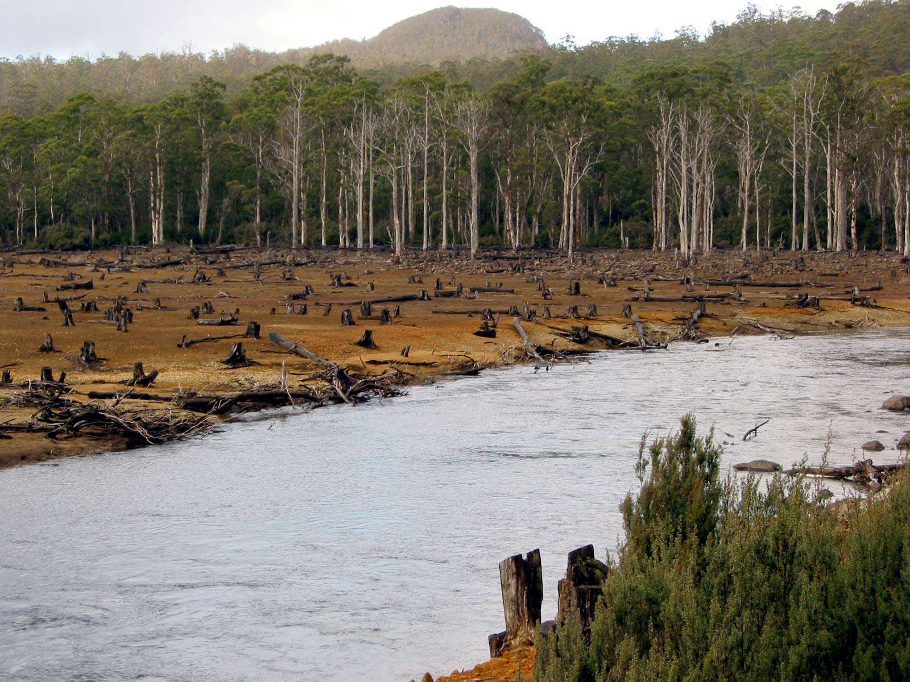

Many wonderful species of plants and animals have been lost, and many others remain endangered. More than 80% of the world's species remain in the Tropical Rainforest. It is estimated that about 50 to 100 species of animals are being lost each day as a result of the destruction of their habitats, and that is a tragedy. Many beautiful creatures, both plants and animals have vanished from the face of the earth.
